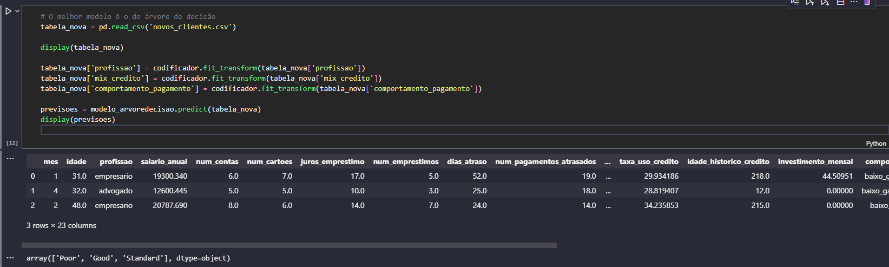

Python
Pandas
Scikit-learn
Arquivo CSV
O objetivo do projeto foi prever o score de uma nova base de clientes a partir de uma base inicial.
Utilizando da biblioteca pandas para leitura do arquivo CSV e Scikit-learn com métodos de decision treen e KNN.
